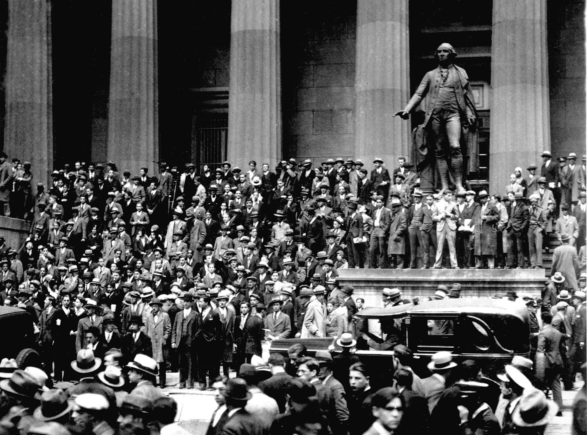
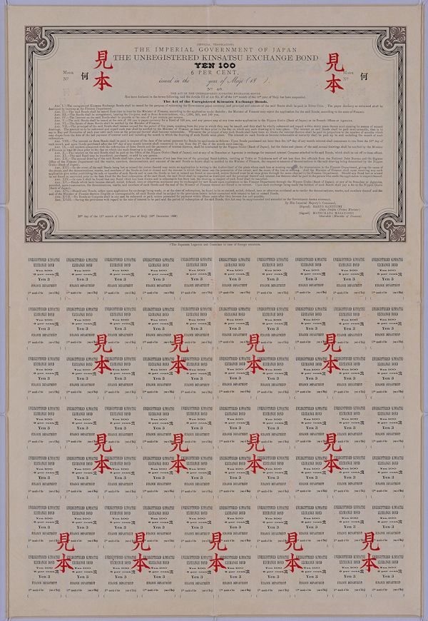
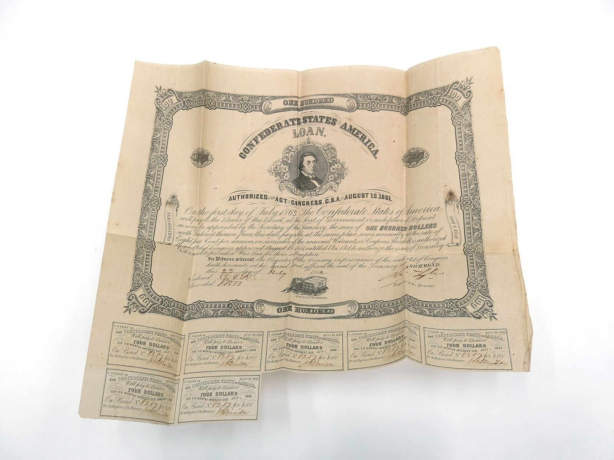

商品
點開任何一項，看它拆開後是什麼、你賺什麼、你承擔什麼。


拆開，就是收據
每一種商品，都能拆成你看得懂的零件：存款、債券、保險、費用。下面是本金 NT$100 萬時，各項大概的金額。
背景是南方邦聯的債券。邦聯戰敗後，這些債券再也沒有兌付：「保本」要看發行者還在不在。
危機一定會來
- 2000網路泡沫破裂，美股跌了兩年半−40%
- 2008雷曼倒閉，「保本」連動債跟著出事−51%
- 2015人民幣大貶，TRF 加倍虧損−14%
- 2020疫情崩盤，一個月內跌三成以上−34%
- 2022升息，股票債券一起跌−16%
美股以月平均價計，2020 年以每日收盤計；2015 年為人民幣兌美元。
去銀行之前
不用變成專家，只要在簽名前多花二十分鐘，看懂你買的是什麼。
出門前
讀那個商品的白話拆解卡5 分鐘
放回 2008 年跑一次壓力測試3 分鐘
列印問理專清單1 分鐘
在銀行
問：最多會賠多少？要有金額
問：銀行從這筆賺多少？要有數字
拿產品說明書回家看不當場簽
回家後
對照自組方法，比一比費用10 分鐘
睡一晚再決定一晚
你帶走的：看懂之後的決定約 20 分鐘